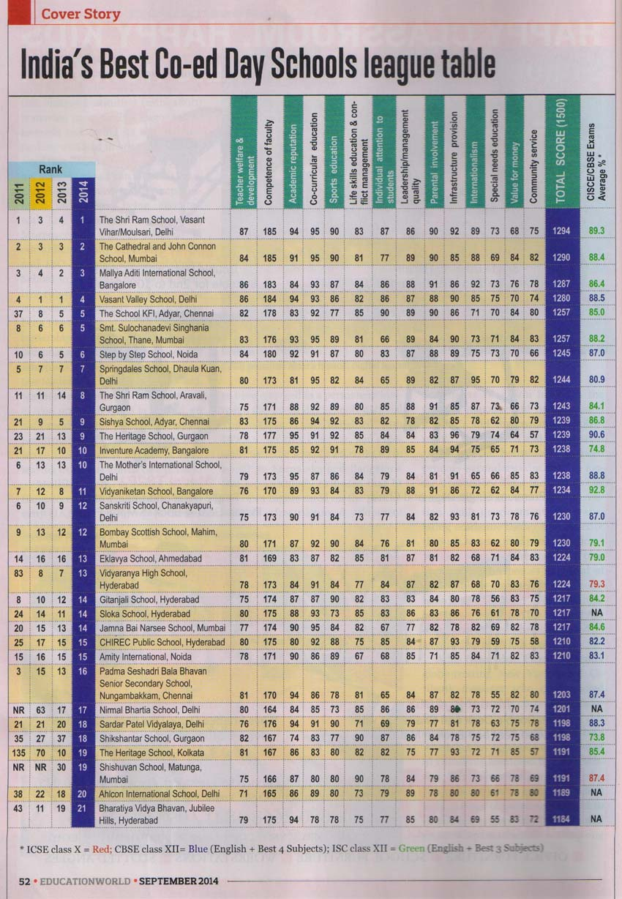
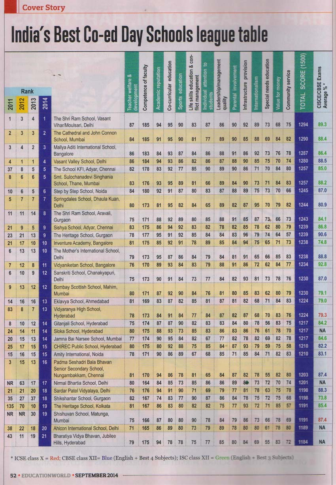

welcome to shishuvan
our school had achived many awards and had won many matches in diffrent sports such as volleyball,basketball,chess etc..

history of shishuvan school
Established on the auspicious day of Labh Pancham of Samvat Year 1972 viz. in 1915 in a rented premises at Matunga, Mumbai, with two students, Shri. Hirji Bhojraj & Sons Cutchi Visha Oswal Jain Chhatralaya, popularly known as Matunga Boading is the backbone of the Cutchi Visha Oswal Jain Community. Initiated and inspired by Shri Velji Lakhamshi Napoo and other philanthropic and far sighted leaders of the community, Matunga Boarding has looked after more than 8500 students by providing them with education and training in various arts and crafts since its inception. In or about 1931, Shri Nanji Hirji Bhojraj and Shri Ratanshi Hirji Bhojraj donated a sum of Rs. 1,25,000 to the institution on certain terms and conditions inter alia adding the name of their father, that is, Shri Hirji Bhojraj. The institution is since then known as Shri Hirji Bhojraj & Sons Cutchi Visha Oswal Jain Chhatralaya. The institution received several donations with the co-operation of the Cutchi Visha Oswal community. In 1934, a generous donation of 1,30,000 kori (the currency of the then Kutch State), from the Trustees of Sheth Ghelabhai Ganshi Smarak Fund was received and a branch of the institution was started at Durgapur, Kutch. In 1945, a handsome donation of Rs. 81,000 was received from Shri Hirji Ghelabhai Savla for a Gujarati medium secondary school attached to the institution now known as Shri Hirji Ghelabhai Savla Vidyalaya. Today the institution's new building on a plot of land of about 6000 sq. meters accommodates Shishuvan, our English Medium School with modern facilities for imparting quality education to the students. In this reconstruction of their alma-mater, the cost of which is about Rs.10 crores, the past students of the institution decided to donate Rs. 5.25 crores as a demonstration of their gratitude, without any conditions. This speaks volumes about the institution which is seen as a mother who has nurtured her children over the years.
Shri Hirji Bhojraj & Sons Kutchi Visha Oswal Jain Chhatralya - Matunga Shishuvan
The new management of Shri Hirji Bhojraj & Sons Cutchi Visha Oswal Jain Chhatralaya mooted the idea of setting up a top of the line English medium school in 1995. They accepted that the contemporary generation was in search of high quality education as well as fluency in spoken and written English, for its children. To house these ambitious plans, a new building would need to replace the old one. Fund–raising proved no barrier as the progressive ideas of the management enthused members and ex-boarders alike, and the first phase of building began in 1996. Shishuvan came into existence in June 2001 with the combined efforts of a small team consisting of the chairperson of the English medium school committee, the school consultant, head of department pre-primary and four pre-primary teachers. After 5 months of intensive teacher training and completion of the interiors, the school formally opened for its students in October 2001 with 70 students joining Playschool and Nursery. Current School strength is 1125 students from Playschool to Std IX. The first batch of students for the Board exam will appear in 2012.
facilities in shishuvan school
Shishuvan school many facilities such as computer lab,library,remedial room,smart boards,chemistry-physics-biology labs etc..

Who we are
 <
<

<
<
